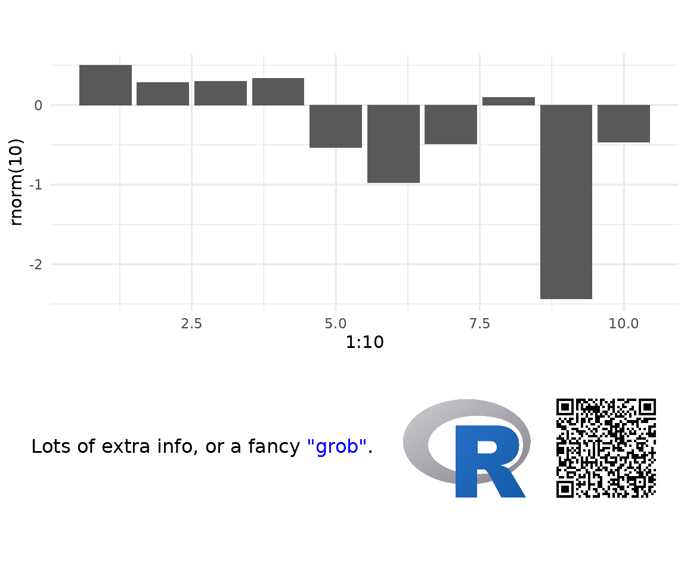
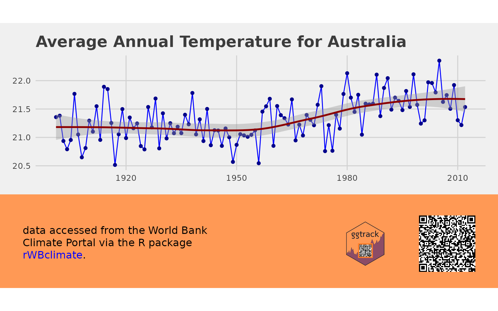

Using ggtrack
To start you just need a ggplot and some text you wish to encode into the QR. The QR is intended to contain enough information to uniquely identify the report, so a URL, file name or other unique identifier. The QR encode process automatically appends a time stamp. But try to keep the content of the QR code minimal. The for information it is the more pixels its requires and the larger it needs to be. The examples here need a QR code size of 1.8cm to be reliably scanned using a phone off the screen. QR code are encoded using the qrencoder package.
library(ggtrack)
library(ggplot2)
library(grid)
gg <- ggplot(mapping = aes(x = 1:10, y = rnorm(10))) +
geom_bar(stat = 'identity') +
theme_minimal()
ggtrack(gg,
qr_content = 'Report ID: 2c9075a5-4d7e-47a5-8616-55dd88af3dc5')
Add a Logo
A logo can be added either from a local or remote source. For now only png and jpeg/jpg are supported.
ggtrack(gg,
qr_content = 'text content here',
logo = 'https://www.r-project.org/logo/Rlogo.png')
Add a Caption
Captions use the gridtext package. So you can use both HTML and markdown to style. Or if you prefer, create your own grob and pass that through instead.
g = ggtrack(gg,
qr_content = 'For all your image tracking needs: https://github.com/mrjoh3/ggtrack',
logo = 'https://www.r-project.org/logo/Rlogo.png',
caption = 'Lots of extra info, or a fancy <span style="color:blue">"grob"</span>.')
grid.draw(g)
Add a download link
The tracking chart can also be saved and made available for download. You can do this manually with gplotly::ggsave() and a simple markdown link as below.
ggsave(g, filename = 'ggrack_simple_download.png')However, ggtracker also has a helper function to facilitate. Using make_download you can create either a download link or button. Unlike the markdown link which simply opens the file in the browser; make_download creates a proper download link. Note, in the example below it is necessary to specify both location to save the file and the download location. This is only necessary in this example due to the way pkgdown handles file locations. In most instances you only needs specify the save location. The button can also be styled by CSS.
dl <- make_download(g,
save_file = c('../man', 'figures', 'ggtrack_chart'),
download_file = c('../reference', 'figures', 'ggtrack_chart'),
type = 'button',
date = '',
render = FALSE){kind=link}
Something to consider at this point, with a down load button it is possible to display a plot without the additional metadata. Then pass the tracker object to the download link or button for users. This is a simple way to maintain the aesthetics of your report but still include vital metadata.
One Tracker Per Document
In some cases you may wish to create a single tracking banner and add it to multiple plots. ggtrack also has a more granular API that allows the user to iteratively build the banner. This banner can then be added to any existing plot.
track <- make_tracker() %>%
add_logo('../man/figures/ggtrack-logo.svg', 1) %>%
add_qr(for_QR, justification = 1) %>%
add_caption(for_Caption) %>%
add_theme(plot.background = element_rect(fill = "#ff9955", size = 0))
temperature_plot %>%
add_banner(track)
Retrieving Metadata
The metadata from the QR code can be read using the scanner on your phone. If you need to programatically extract this data use the quadrangle package. Given the way the QR code are generated, you will need to ensure you specify flop = TRUE. This essentially flips the image to replicate what a scanner looking at a screen would capture.
With quadrangle you can pass in the entire file or just the QR code. The package will detect the location of the QR code before decoding.
library(quadrangle)
qr <- qr_scan("../man/figures/ggtrack_chart_.png", flop = TRUE, plot = FALSE)
qr$values$value
#> [1] "For all your image tracking needs: https://github.com/mrjoh3/ggtrack f50d053 20210704-084830"